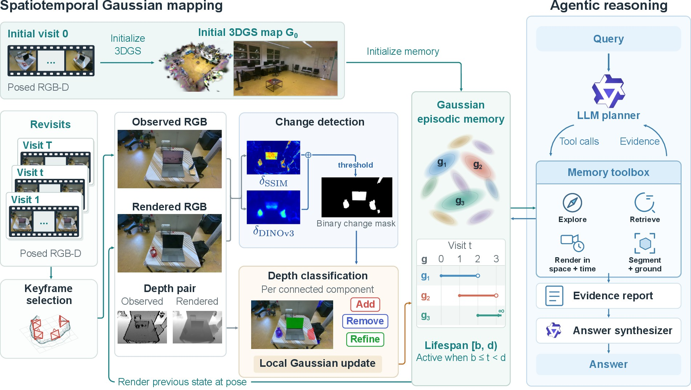
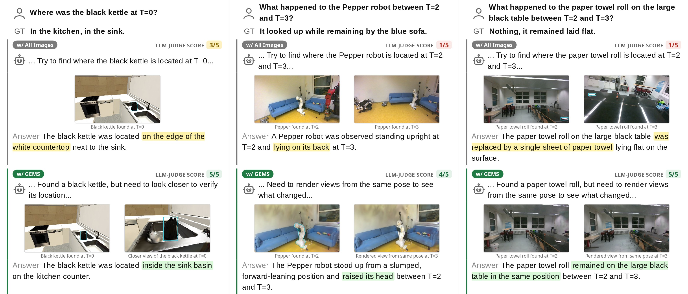

Gaussian Episodic Memory for Long-Term Spatiotemporal Reasoning
Abstract
Real-world environments undergo continual semi-static changes, requiring a memory representation that captures both the spatial and temporal evolution of a scene. Existing spatio-temporal memories for robots typically rely either on structured representations, which are limited to the entities and attributes captured during construction, or on image-based memories, which are constrained to previously observed viewpoints. We introduce GEMS, a framework that combines a persistent spatio-temporal 3D Gaussian Splatting (3DGS) map with an agentic reasoning pipeline. The 3DGS map is reconstructed once and subsequently updated only in regions where the scene changes, storing only these modifications while preserving visual detail across time. The agentic pipeline leverages this map to render novel views on demand, iteratively accumulating evidence to answer spatio-temporal questions and ground objects from natural-language queries. To advance future research, we introduce GEMS-Bench, a spatiotemporal question-answering benchmark focused on semi-static environments. It comprises 3 real-world and 12 synthetic environments, spanning 473 question-answer pairs. We evaluate GEMS on novel-view synthesis quality across scene updates, 3D object grounding, spatiotemporal question answering, and storage efficiency. GEMS outperforms recent baselines in 3D object grounding and spatiotemporal question answering, while achieving rendering quality on par with dedicated scene-update methods.
Method

Left: mapping. On each revisit, keyframes rendered from the previous map are compared against the incoming observations to obtain a change mask, components of which are labeled as Add, Remove, or Refine based on the depth error. The affected Gaussian primitives are re-optimized. Each Gaussian carries a lifespan [b, d), so the state of the scene at any past time can be retrieved as a temporal slice. Right: reasoning. An LLM planner answers a query through memory tools, and an answer synthesizer concludes from the gathered evidence.
Qualitative Results

Qualitative comparison of GEMS against GEMS-all-images. Each column shows a question, the evidence each agent collected, and the LLM-judge score. Left: a synthesized closer view resolves a spatial ambiguity from an oblique camera angle. Middle and right: time_view lets GEMS compare both visits from one pose, where the baseline is restricted to two different stored viewpoints.